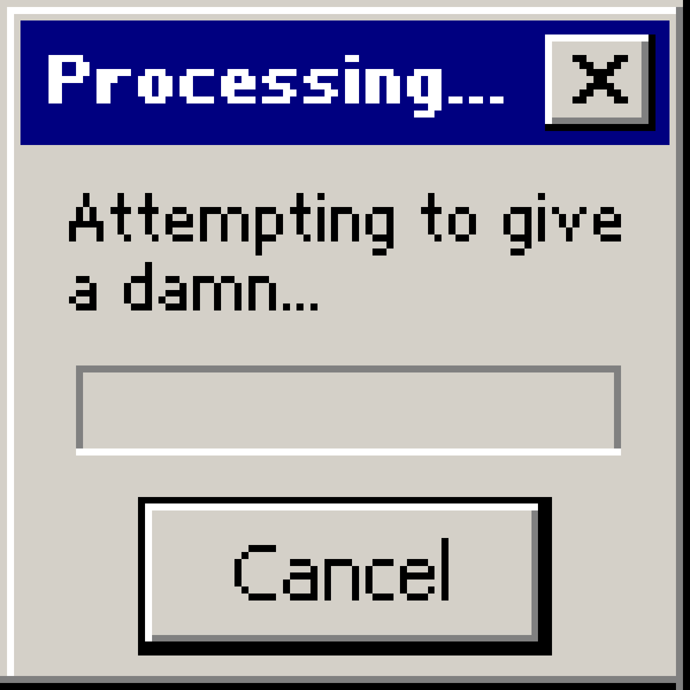
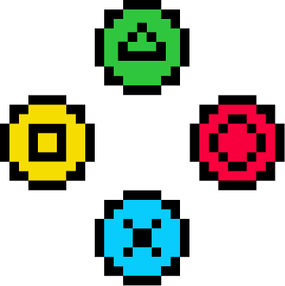
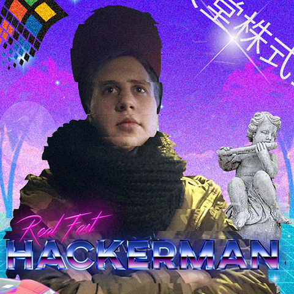
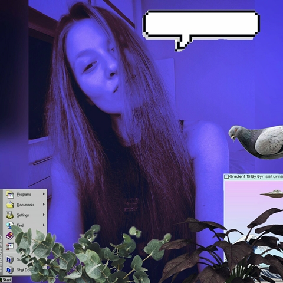

gamestation
For gamers by gamers
About Us
Introduction

/* Hey you. You who found our website. What is this supposed to be, right? We're a team of four oriented towards design and web development. Being also passionate about games and computers led us to trying to revive an era. So we have built, step by step a genuine copy of the old school Windows, trying to incorporate as many elements as our imagination could provide. In case you wondered who are the masterminds of this project you can check it out down below. */
The Creators
Dominykas "alohas" Kutka

I am Multimedia Design and Communication student at Kea in Copenhagen. I would describe myself as a casual gamer. However, I play a lot of competitive games. I try almost all of the new games from big developer studies but I don't forget the indie developers too. My favourite game genres are Racing and strategy.
Klajdi "rainFalls" Ajdini

Hello, I am an student studying in Copenhagen. Aside from studying I like playing games from time to time, even though I don’t play all the latest games that come out, I know a lot about them.I mostly like the games that look pretty, meaning that I like the games that have nice graphics aside from nice gameplay. My favorite game battlefield IV.
Brigitta "[;]" Rucz

Currently studying MMD along with my fellow team members. I like innovation and great ideas. I love to play around by coding. Last but not least, I enjoy some good relaxation that games offer. League of Legends, World of Warcraft and other single-player games with graphics worth big awards.
Karolina "karo" Valentová

I am a student of multimedia design. I like to spend my free time with painting, drawing or playing video games. I’m very picky with games, my prefference is non-hiperrealistic look and interesting storyline. My favourite games are Skyrim, Beyond good and evil, Spyro and Lego series.